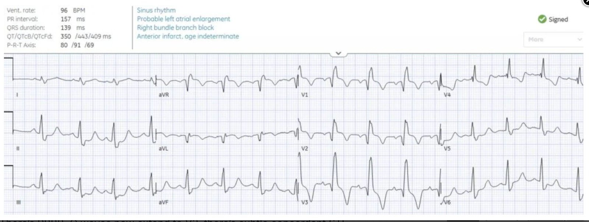
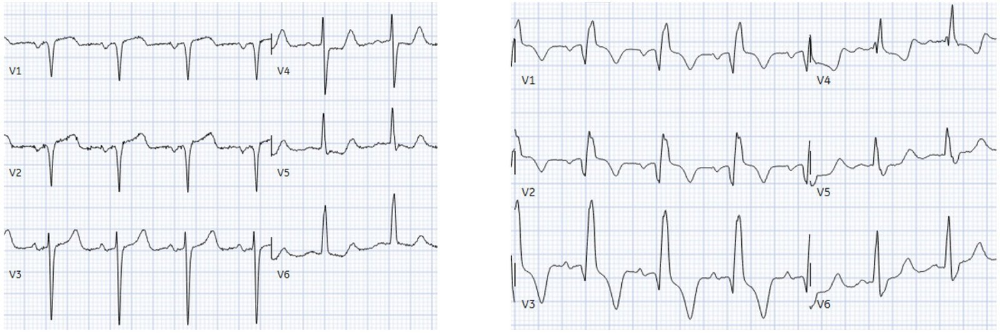
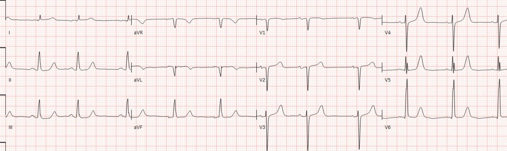
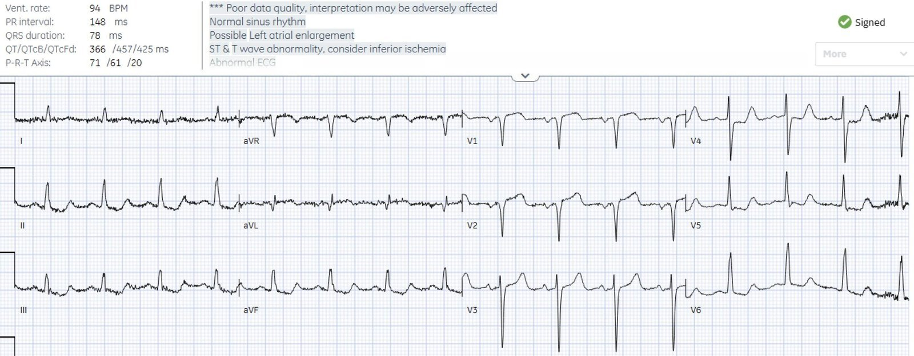
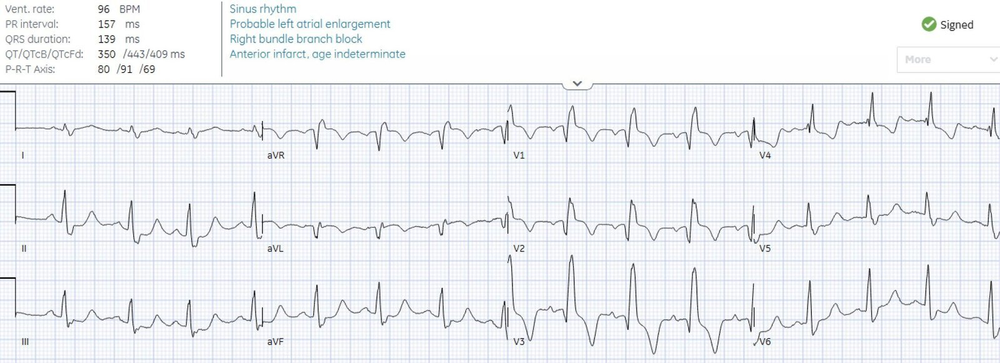
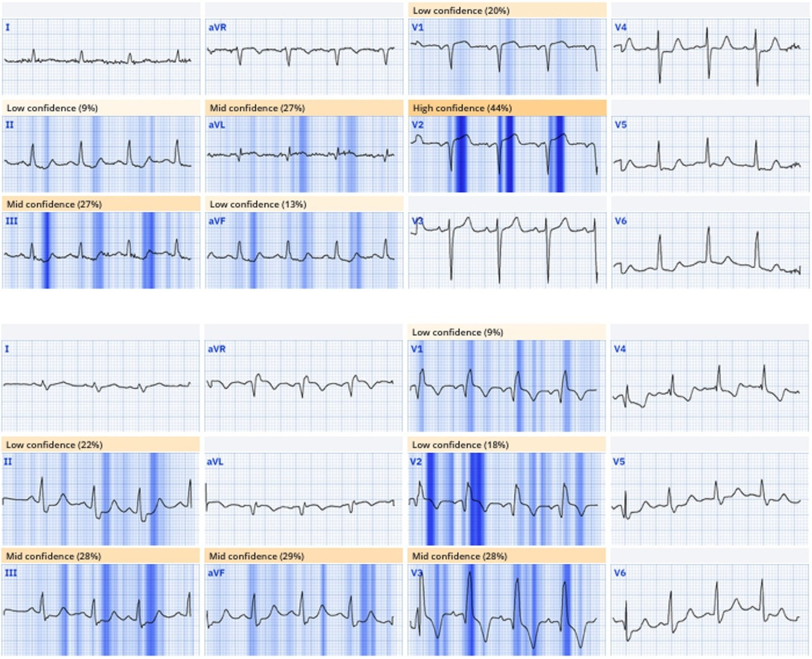
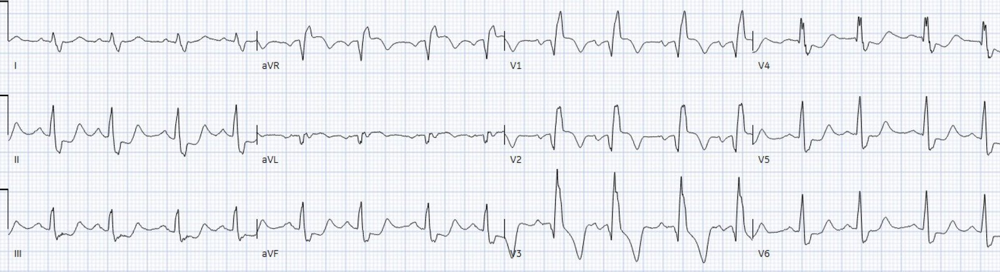
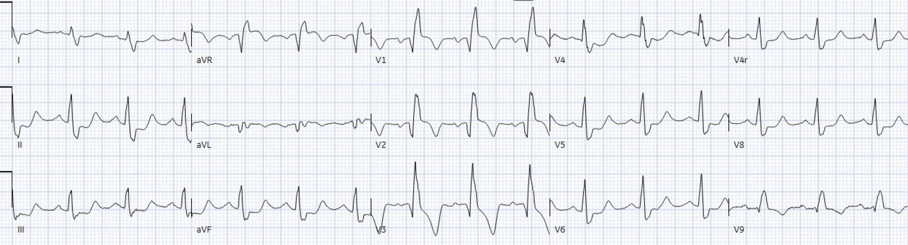
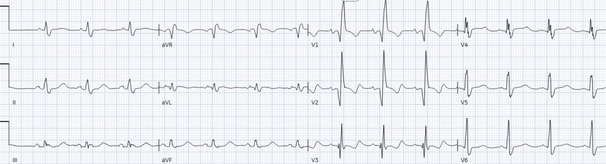
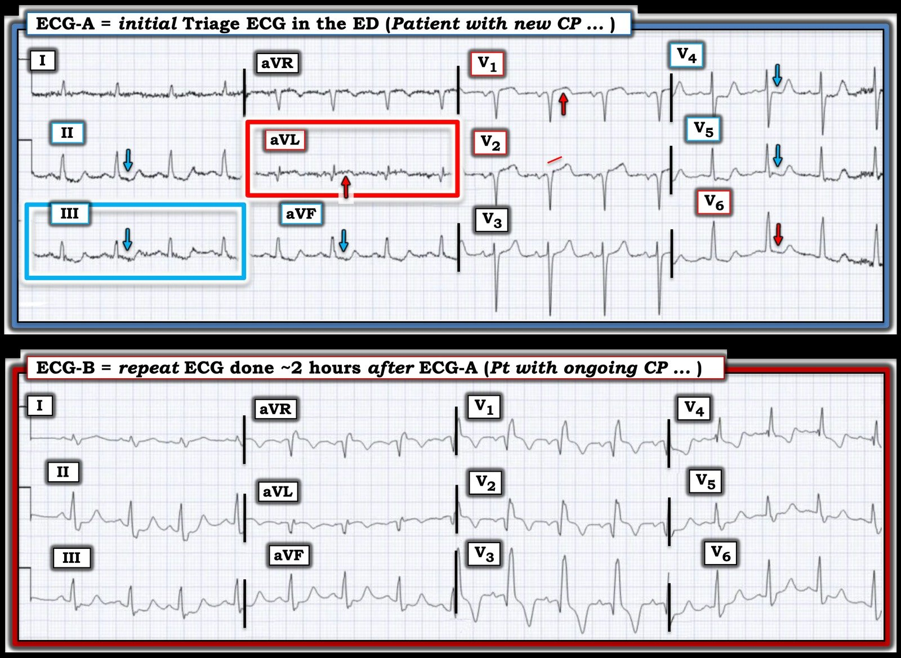

10/08/2025 — Đau ngực kèm RBBB cấp: chỉ là một NSTEMI nữa thôi sao?
Bản dịch tiếng Việt của bài "Chest pain with acute RBBB: just another NSTEMI?" – Dr. Smith’s ECG Blog. Giữ nguyên toàn bộ 9 hình ảnh của bản gốc.


Tác giả: Jesse McLaren, kèm bình luận của Smith
Một bệnh nhân 75 tuổi có tiền sử nhồi máu cơ tim và bệnh cơ tim thiếu máu cục bộ, đến viện vì đau ngực và đau thượng vị mức 6/10 kéo dài liên tục 4 giờ. Các điện tâm đồ liên tiếp (serial ECGs) đều ‘STEMI âm tính’ nhưng cho thấy một RBBB cấp. Dưới đây là các chuyển đạo trước tim của những điện tâm đồ liên tiếp đó: chuyện gì đang xảy ra?


Điện tâm đồ lúc phân loại (triage): “ST chênh xuống” hay thay đổi soi gương (reciprocal)?
Đây là điện tâm đồ nền và điện tâm đồ lúc phân loại đầy đủ, kèm kết quả đọc cuối cùng. Bạn nghĩ sao?
Điện tâm đồ nền:


Điện tâm đồ lúc phân loại:


Nhịp xoang bình thường, V1-2 đặt điện cực cao (sóng P âm ở V2), dẫn truyền và trục bình thường, sóng R xuất hiện muộn kèm sóng Q cũ ở V2 và aVL, điện thế bình thường. Bác sĩ cấp cứu và kết quả đọc cuối cùng của khoa tim mạch ghi nhận ST chênh xuống ở thành dưới.
Smith: “ST chênh xuống ở thành dưới” thường bị quy cho “thiếu máu cục bộ thành dưới” (ngụ ý thiếu máu cục bộ dưới nội tâm mạc thành dưới). Nhưng chúng tôi đã chứng minh vô số lần VÀ y văn đã chứng minh rằng thiếu máu cục bộ dưới nội tâm mạc không định khu cho bất kỳ một thành nào. ST chênh xuống ở các chuyển đạo “thành dưới” là một dấu hiệu soi gương của vùng bên cao (chủ yếu là aVL).
Jesse tiếp tục: “ST chênh xuống này là soi gương của ST chênh lên kín đáo ở aVL. Và còn có ST chênh xuống ở V5-6, là soi gương của ST chênh lên kín đáo và sóng T tối cấp ở V1-2 – tức hình ảnh xoáy trước tim (precordial swirl).
Như vậy, một bệnh nhân có xác suất tiền nghiệm cao đến viện vì đau ngực và có thay đổi thiếu máu cục bộ mới ở 8/12 chuyển đạo. Nhưng điện tâm đồ không đạt tiêu chuẩn STEMI, nên được ký duyệt là “STEMI âm tính” và bệnh nhân phải chờ đến lượt khám.
Tôi gửi điện tâm đồ này cho bác sĩ Smith, không kèm điện tâm đồ cũ để so sánh và không kèm bất kỳ thông tin lâm sàng nào; ông trả lời ngay: “xoáy và cờ Nam Phi” – nói cách khác, có cả xoáy trước tim (ST chênh lên (STE)/sóng T tối cấp ở V1-2 kèm ST chênh xuống (STD) soi gương ở V5-6) lẫn hình ảnh “Cờ Nam Phi” (South African flag) (STE ở aVL-V2, kèm STD soi gương ở thành dưới), mỗi dấu hiệu, tự thân nó, đều là hình ảnh của OMI. Dấu hiệu sau, nếu đứng riêng, là điển hình của tắc nhánh chéo, nhưng xoáy trước tim định khu chỗ tắc mạch vành cấp ở đoạn gần LAD – điều này quan trọng để hiểu những gì xảy ra tiếp theo.
Điện tâm đồ ghi lại: RBBB cấp
Bệnh nhân được khám 2 giờ sau đó, khi kết quả hs-trop I đầu tiên trả về là 400ng/L (bình thường <26 ở nam và <16 ở nữ), bệnh nhân vẫn còn đau ngực và điện tâm đồ có thay đổi. Bạn nghĩ sao?


Có RBBB, sóng Q nay lan tới V3, có STE đồng hướng kín đáo ở V1-2, tiếp theo là sóng T đảo ngược (TWI). Nếu tách khỏi bối cảnh, hình ảnh này có thể là một RBBB cũ kèm hình thái phình thất trái cũ (Q thành trước + STE nhẹ + TWI). Nhưng cả RBBB lẫn sóng Q ở V3 đều là mới xuất hiện (cấp). TWI, kể cả ở aVL, có thể gợi ý tái tưới máu nếu triệu chứng đã hết hoàn toàn, nhưng bệnh nhân vẫn còn đau ngực.
Smith: Sóng Q ở aVL cũng sâu hơn và rộng hơn.
Queen of Hearts xác định cả hai điện tâm đồ đều chẩn đoán OMI – làm nổi bật sóng T tối cấp ở điện tâm đồ thứ nhất, STE đồng hướng ở điện tâm đồ thứ hai, và thay đổi soi gương ở thành dưới trên cả hai:


Ứng dụng PMcardio for Individuals 3.0 mới nay đã có mô hình Queen of Hearts mới nhất và khả năng giải thích của AI (bản đồ nhiệt màu xanh lam)! Tải ngay cho iOS hoặc Android. https://www.powerfulmedical.com/pmcardio-individuals/ (Bác sĩ Smith và bác sĩ Meyers đã huấn luyện mô hình AI này và là cổ đông của Powerful Medical).
Trong khi không có bằng chứng nào cho thấy “LBBB mới” giúp nhận diện OMI (nhưng tiêu chuẩn Sgarbossa cải biên thì có), lại có bằng chứng cho thấy RBBB cấp là một đặc điểm nguy cơ cao của tắc đoạn gần LAD (hoặc thân chung động mạch vành trái).
ACS kèm đau ngực kháng trị: CT ngực, điện tâm đồ 15 chuyển đạo hay chụp mạch vành?
Nếu bệnh nhân đến viện với điện tâm đồ STEMI dương tính, phòng thông tim (cath lab) đã được kích hoạt ngay lập tức. Không có đặc điểm nguy cơ cao nào gợi ý bóc tách động mạch chủ, và STEMI thứ phát do bóc tách động mạch chủ là cực kỳ hiếm (0.51% trong nghiên cứu này). Nhưng vì các điện tâm đồ liên tiếp của bệnh nhân đều “STEMI âm tính”, bác sĩ đã đi tìm các nguyên nhân đau ngực nguy hiểm khác – bằng chụp CT để loại trừ bóc tách động mạch chủ. Các điện tâm đồ ghi lại trong vài giờ tiếp theo cho thấy tình trạng tắc vẫn đang tiếp diễn:
Smith: trong nghiên cứu này về các trường hợp tắc LAD toàn bộ, hoàn toàn (vừa được công bố tuần trước), chúng tôi đã chứng minh rằng sóng T tối cấp KHÔNG tiến triển thành ST chênh lên một cách đáng tin cậy (0/17 trường hợp trong nghiên cứu này!). Meyers HP…Smith SW. Failure of standard contemporary ST-elevation myocardial infarction electrocardiogram criteria to reliably identify acute occlusion of the left anterior descending coronary artery (Sự thất bại của các tiêu chuẩn điện tâm đồ STEMI chuẩn hiện hành trong việc nhận diện đáng tin cậy tắc cấp động mạch liên thất trước). Eur Heart J Acute Cardiovasc Care. 2025;zuaf037




(Lưu ý: việc ghi điện tâm đồ 15 chuyển đạo cho một bệnh nhân ‘non-STEMI’ đang còn đau phải đủ điều kiện để kích hoạt phòng thông tim – vì điều này có nghĩa là bệnh nhân vẫn còn triệu chứng thiếu máu cục bộ và người điều trị đang đi tìm ST chênh lên, mà ACS kèm thiếu máu cục bộ kháng trị là chỉ định chụp mạch vành bất kể điện tâm đồ thế nào). CT ngực không thấy bóc tách và bệnh nhân được chuyển tới khoa tim mạch.
Non-STEMI hay OMI STEMI âm tính?
Khoa tim mạch ghi nhận bệnh nhân vẫn còn đau mức 2/10 sau khi đến viện 8 giờ, có RBBB mới và troponin tăng lên 4,000, nhưng vẫn nhập viện cho bệnh nhân với chẩn đoán “non-STEMI” vì chưa có điện tâm đồ nào đạt tiêu chuẩn STEMI.
Smith: không có chẩn đoán nào vô giá trị hơn “Non-STEMI”
Trong 24 giờ tiếp theo, troponin tăng lên 40,000ng/L, và siêu âm tim cho thấy EF giảm từ 45% xuống 30% kèm thành trước vô động. Bệnh nhân được đưa vào phòng thông tim và phát hiện tắc 95% đoạn gần LAD, đúng như điện tâm đồ lúc phân loại đã dự đoán. Điện tâm đồ theo dõi cho thấy RBBB vẫn tồn tại kèm sóng Q thành trước, và STE đồng hướng đã hết:


Bệnh nhân bị chậm trễ 24 giờ mới được tái tưới máu cho tình trạng tắc đoạn gần LAD kèm RBBB cấp, troponin đỉnh 40,000ng/L và thành trước vô động. Nhưng chẩn đoán lúc ra viện vẫn là “non-STEMI”, điều này duy trì mô hình hiện hành – thay vì OMI STEMI âm tính (STEMI(-)OMI), chẩn đoán vốn sẽ đánh dấu ca này để xem xét cải thiện chất lượng.
Smith: vì đây là một “Non-STEMI”, nên nó không bị tính là bỏ sót. Nó không phải trải qua phân tích cải thiện chất lượng nào, không vi phạm chỉ số đảm bảo chất lượng nào, và hoàn toàn lọt qua mọi tầm kiểm soát. Nó được coi là “chăm sóc phù hợp”, bất chấp kết cục của bệnh nhân tệ hơn. Đây là “Nghịch lý Không Có Âm Tính Giả” (No False Negative Paradox): Nếu điện tâm đồ không đạt tiêu chuẩn STEMI mà có tắc mạch, thì đó là NonSTEMI và do đó không phải là một STEMI âm tính giả. Không thể là STEMI vì định nghĩa của bệnh dựa trên một khía cạnh (STE) của một xét nghiệm (điện tâm đồ). Không bệnh lý nào khác lại được định nghĩa như vậy.
NSTEMI cũng giống như nói viêm ruột thừa là “Đau bụng Có Bạch Cầu Thấp”. Và nếu bạch cầu thấp nhưng ruột thừa bị thủng, thì không vấn đề gì. Chúng ta không bỏ sót vì số lượng bạch cầu không cao.
Điều cần nhớ
- Điều đầu tiên cần cân nhắc khi gặp STD do thiếu máu cục bộ là nó có phải soi gương của STE kín đáo và sóng T tối cấp hay không – bao gồm STD thành dưới soi gương với vùng bên cao kín đáo, và STD ở V5-6 soi gương với V1-2 (xoáy trước tim)
- Xoáy trước tim nhận diện những bệnh nhân tắc đoạn gần LAD có nguy cơ xuất hiện RBBB cấp, một bệnh cảnh nguy cơ cao hơn nhiều so với ‘LBBB mới’
- RBBB gây STD/TWI ngược hướng thứ phát ở các chuyển đạo trước tim có dạng RsR’, nên việc tìm STE đồng hướng/sóng T tối cấp ở các chuyển đạo này có thể giúp nhận diện OMI LAD kín đáo
- Nếu một bệnh nhân ACS có thiếu máu cục bộ kháng trị, rất khó có khả năng nguyên nhân là bóc tách động mạch chủ nếu điện tâm đồ chẩn đoán OMI, và việc ghi điện tâm đồ 15 chuyển đạo cho ACS kèm thiếu máu cục bộ kháng trị có nghĩa là bệnh nhân cần chụp mạch vành
- Chẩn đoán ra viện “non-STEMI” cho một ca tắc mạch vành cấp được tái tưới máu muộn là một rào cản đối với cải thiện chất lượng
======================================
BÌNH LUẬN CỦA TÔI, bởi KEN GRAUER, MD (10/8/2025):
Bài hôm nay của bác sĩ McLaren điểm lại một ca bệnh gây bực bội ở một người đàn ông 75 tuổi đã biết có bệnh mạch vành — người mà dù đến viện với bệnh sử CP (đau ngực) mới kéo dài 4 giờ — vẫn phải chịu chậm trễ 24 giờ mới được tái tưới máu, mặc dù điện tâm đồ ban đầu ghi từ một ngày trước đó đã chẩn đoán được OMI cấp.
- Bác sĩ McLaren điểm lại chuỗi sơ suất đáng tiếc đã xảy ra trong khoảng 24 giờ này — mà gây bực bội nhất là chẩn đoán ra viện “non-STEMI” cho một ca OMI cấp rõ ràng, mà ngay cả khi không có điện tâm đồ nền trước đây của bệnh nhân — lẽ ra đã phải được chẩn đoán ngay lập tức dựa trên tiền sử đã biết bệnh mạch vành, bệnh sử hiện tại là CP mới dữ dội, dai dẳng — và điện tâm đồ lúc phân loại tại ED ban đầu vốn chẩn đoán OMI cấp cho đến khi chứng minh được điều ngược lại (không cần giá trị Troponin hay thậm chí điện tâm đồ ghi lại để biện minh cho việc kích hoạt phòng thông tim).
Tôi tập trung Bình luận của tôi vào một số điểm bổ sung về điện tâm đồ lúc phân loại ban đầu so với điện tâm đồ ghi lại khoảng ~2 giờ sau đó (cả hai đều được tôi đưa lại trong Hình 1).
= = =
Hình 1: So sánh giữa điện tâm đồ lúc phân loại ban đầu của ca hôm nay — với điện tâm đồ ghi lại khoảng ~2 giờ sau đó.


Điện tâm đồ lúc phân loại ban đầu của ca hôm nay:
Như bác sĩ McLaren và bác sĩ Smith đã nêu — điện tâm đồ lúc phân loại ban đầu của ca hôm nay chẩn đoán OMI cấp cho đến khi chứng minh được điều ngược lại. Đúng là các dấu hiệu chẩn đoán trên ECG-A có phần kín đáo — nhưng chúng phải được nhận ra!
- Dường như bị bỏ qua là xác suất tiền nghiệm (tức là, trước khi bạn thậm chí nhìn vào điện tâm đồ này) rằng bệnh nhân đang có một biến cố tim cấp, bởi vì: i) Người đàn ông lớn tuổi này đã biết có bệnh mạch vành với tiền sử nhồi máu trước đây; và ii) Bệnh nhân hiện đến ED với CP mới dai dẳng đã kéo dài liên tục trong 4 giờ trước đó.
- Với bệnh sử nêu trên — bất kỳ bất thường điện tâm đồ nào có khả năng là cấp tính đều đáng được cân nhắc mạnh mẽ việc thông tim sớm (hoặc ít nhất — so sánh từng chuyển đạo cẩn thận hơn với điện tâm đồ nền của bệnh nhân và ghi một điện tâm đồ lặp lại sớm hơn nhiều so với 2 giờ đã mất trước khi chỉ định ECG-B, đặc biệt khi bệnh nhân vẫn đang CP).
- Xin nhấn mạnh: Những dấu hiệu tôi nêu dưới đây đã hiện rõ ngay với tôi trước khi tôi so sánh ECG-A với điện tâm đồ nền của bệnh nhân.
Không dưới 9/12 chuyển đạo trên ECG-A có thay đổi ST-T đáng lo ngại:
- “Mắt” tôi bị thu hút ngay lập tức bởi chuyển đạo aVL (trong khung chữ nhật MÀU ĐỎ ở ECG-A). Ở bệnh nhân đang còn CP này — sóng Q (tương đối lớn so với kích thước rất nhỏ của QRS ở aVL) — đi kèm ST dạng vòm (coving) và chênh lên với phần cuối sóng T đảo ngược phải được coi là cấp tính cho đến khi chứng minh được điều ngược lại.
- Xác nhận rằng thay đổi ST-T ở chuyển đạo aVL là “thật” và cấp tính — đến từ hình ảnh ST-T đối xứng ngược chiều như soi gương ở chuyển đạo III (có cả phần cuối sóng T dương sau đoạn ST chênh xuống ở chuyển đạo này).
- Xác nhận thêm đến từ những thay đổi ST-T tương tự ở 2 chuyển đạo thành dưới còn lại ( = chuyển đạo II và aVF).
Sau khi đã xác lập từ các chuyển đạo chi rằng bệnh nhân CP mới dai dẳng này đang có một biến cố tim cấp đang diễn ra — tôi chuyển sự chú ý sang các chuyển đạo trước ngực.
- Có hiện tượng thẳng đuỗn rõ ràng của đoạn khởi đầu ST ở chuyển đạo V2. Thêm vào đó, với độ sâu vừa phải của sóng S ở V2 — mức ST chênh lên ở chuyển đạo này lớn hơn mức dự kiến.
- Đặc biệt trong bối cảnh có bất thường ST-T ở chuyển đạo V2 kế cận — đoạn ST dạng vòm và mức ST chênh lên tại điểm J ở chuyển đạo V1 rõ ràng là bất thường (một lần nữa theo khái niệm tính tương xứng (proportionality) — vì sóng S ở chuyển đạo V1 nhỏ).
- Cuối cùng — các mũi tên chỉ xuống ở chuyển đạo V4,V5,V6 làm nổi bật ST-T thẳng đuỗn và chênh xuống ở các chuyển đạo trước ngực bên này.
- Như bác sĩ McLaren đã nêu — sự kết hợp giữa ST chênh lên ở chuyển đạo V1,V2 với ST-T chênh xuống ở chuyển đạo V6 chỉ ra hình ảnh Xoáy “trước tim” (Xem nhiều ví dụ về hình ảnh Xoáy trong bài đăng ngày 15 tháng Mười năm 2022 — kèm phần tóm tắt trong Bình luận của tôi ở cuối trang về những gì cần tìm ở chuyển đạo V1,2 và V5,V6 để chẩn đoán “Xoáy”).
= ==
So sánh giữa điện tâm đồ #1 và điện tâm đồ ghi lại:
Như bác sĩ McLaren đã nêu — ECG-B nay cho thấy RBBB (blốc nhánh phải) vốn không có trên bản ghi lúc phân loại ban đầu.
- LƯU Ý #1: Điều đầu tiên tôi kiểm tra khi thấy RBBB mới xuất hiện trên ECG-B — là tần số tim tương đối của điện tâm đồ ghi lại này so với điện tâm đồ lúc phân loại ban đầu, vì NẾU tần số thất đã tăng — thì đây có thể chỉ đơn giản là blốc nhánh liên quan tần số. Nhưng tần số tim gần như giống hệt nhau ở ECG-A và ECG-B. Với tình trạng CP đang tiếp diễn của bệnh nhân đi kèm bất thường ST-T tăng lên — việc mới xuất hiện RBBB ở một bệnh nhân OMI LAD đoạn gần cấp (như được chẩn đoán bằng hình ảnh “Xoáy” mô tả ở trên) là một dấu hiệu đáng lo ngại của nhồi máu đang tiến triển.
- LƯU Ý #2: So sánh ECG-A và -B trong Hình 1 là một minh họa tuyệt vời cho thấy RBBB là một sự chậm dẫn truyền ở phần cuối như thế nào. Nghĩa là, với RBBB — vách liên thất vẫn được khử cực bình thường (từ trái sang phải) — tiếp theo là khử cực bình thường của thất trái — và chỉ sau đó thất phải mới được khử cực nhờ xung điện truyền chậm từ LV đã khử cực (tức là, vì nhánh phải bị blốc — khử cực RV bị chậm lại và diễn ra từ từ bằng cách lan qua các sợi cơ tim không chuyên biệt).
- Chúng ta thấy điều này trên ECG-B — vì các sóng khởi đầu của QRS trên ECG-B gần như giống hệt với trên ECG-A. Chính sự chậm trễ ở phần cuối của khử cực RV do RBBB tạo ra các sóng S tận rộng ở các chuyển đạo bên I và V6 của ECG-B — và sóng R’ cao ở chuyển đạo V1.
- Ý nghĩa của 2 gạch đầu dòng trên — là trong khi sóng Q đã có ở chuyển đạo V1,V2 của ECG-A — thì sóng Q ở chuyển đạo V3 trên ECG-B là mới!
- Việc có ST chênh lên ở chuyển đạo V1,V2 nay rõ ràng hơn trên ECG-B so với trên ECG-A. Đó là vì khi có RBBB, ST-T ở chuyển đạo V1,V2 thường sẽ chênh xuống ít nhất là nhẹ. Do vậy, các đoạn ST dạng vòm mà chúng ta thấy chênh lên trên ECG-B đã thực sự “nâng lên” nhiều hơn so với vẻ bề ngoài, vì lẽ ra chúng phải cho thấy một mức ST chênh xuống nào đó khi xuất hiện RBBB.
So sánh từng chuyển đạo giữa ECG-A và -B ở các chuyển đạo chi cho thấy:
- Ở chuyển đạo aVL — sóng Q sâu hơn và ST chênh lên nhiều hơn, kèm phần cuối sóng T đảo ngược nhiều hơn so với trên ECG-A.
- Ở chuyển đạo I — sóng T tối cấp vốn không có trên ECG-A (Hãy nhớ đưa tính tương xứng vào khi đánh giá “kích thước” sóng T ở chuyển đạo I của ECG-A).
- Ở các chuyển đạo thành dưới — ST thẳng đuỗn và ST chênh xuống sâu hơn, kèm phần cuối sóng T dương cao hơn so với trên ECG-A.
Điều cốt lõi: Bất kỳ nghi ngờ nào còn sót lại về chẩn đoán tắc LAD đoạn gần cấp kèm sự xuất hiện đáng lo ngại của RBBB cấp — lẽ ra đã phải bị xóa bỏ ngay khi điện tâm đồ ghi lại được ghi.